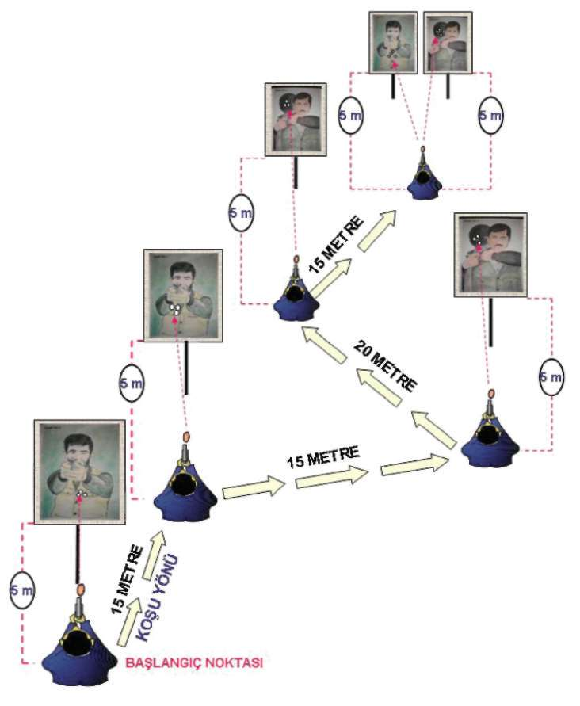

3.3. EFORLU ATIŞ PARKUR ÇALIŞMASI
Tekniği Uygulamalı Olarak Çalışma Şekli
^ Emniyet tedbirlerini okuyun. Atış poligonuyla ilgili gerekli önlemleri alın.
^ Vücudunuzu basit ısınma teknikleri ile ısındırın ve çalışmaya hazırlayın.
Silah ve şarjörleri kontrol edip koruyucu malzemeleri giyin ve giydirin.
^ Bu istasyonu aşağıdaki şekilde görüldüğü gibi hazırlayın.
^ Bu istasyonda ilk çalışmayı yarı otomatik tabancayla teker teker yapın.
^ İstasyonun başlangıç noktasında yerinizi alarak ilk şarjörünüze 11 adet fişek doldurup kılıfına koyun. İkincisine 9 adet fişek doldurup kılıfınızdaki tabancanıza takın ve başla komutunu bekleyin.
^ Kronometreye basarak verilen başla komutuyla, tabancanızı kılıfınızdan çekip kurarak ilk hedefinize 3 adet hızlı atış yapın ve tabancanızı kontrol edip sırasıyla hedeflere koşun, step yapıp durarak aynı atışları tekrarlayın.
^ Tabancanızın fişeğinin bittiği yerde çökerek şarjör değiştirin. En son attığınız hedefe çökme pozisyonunda 1 atış daha yapıp tekrar koşarak bir sonraki hedefinize yönelin ve aynı atışları tekrarlayın. Son 2 hedefe atış
yaparken ilk hedefe 4 atış, ikinci hedefe de 4 atış yaparak kronometreyi durdurun.
^ Tamamlanan her çalışmadan sonra şarjörü çıkartın. Tabancanın fişek yatağını gözle kontrol edin. Güvenli bir bölgede tetik düşürün. Şarjör ve tabancaları kılıflarına koyun.
^ Puanlama sistemi yapılırken, temel eğitim kursunda; 40 saniyede 17
isabetli vuruş, eğitici yetiştirme kursunda 35 saniyede 18 isabetli vuruş
ile tamamlayan başarılı sayılır. Ayrıca rehineye isabet eden her vuruş
için 3 saniye, hedefin dışına kaçırılan her atış için de 2 saniye zamana eklenerek değerlendirme yapılır.
^ Aynı çalışmayı ve değerlendirmeyi MP5 makinalı tabancayla yapın. Bir önceki çalışmadan farklı olarak elinizdeki MP5 makinalı tabancayı kurarak çalışmaya başlayın ve yedek şarjörünüzün rahat alabileceğiniz bir yerde olmasına dikkat edin. (Bakınız Şekil-19.a, 19.b) 148


BÖLÜM
İLERİ SEVİYE ATIŞ TEKNİKLERİ
Şekil-19.a) Temel Eğitim Kursu Eforlu Atış Test Parkuru (Yarı Otomatik ve MP5
Makinalı Tabanca)